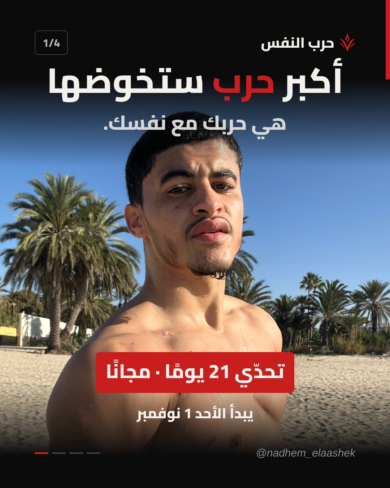
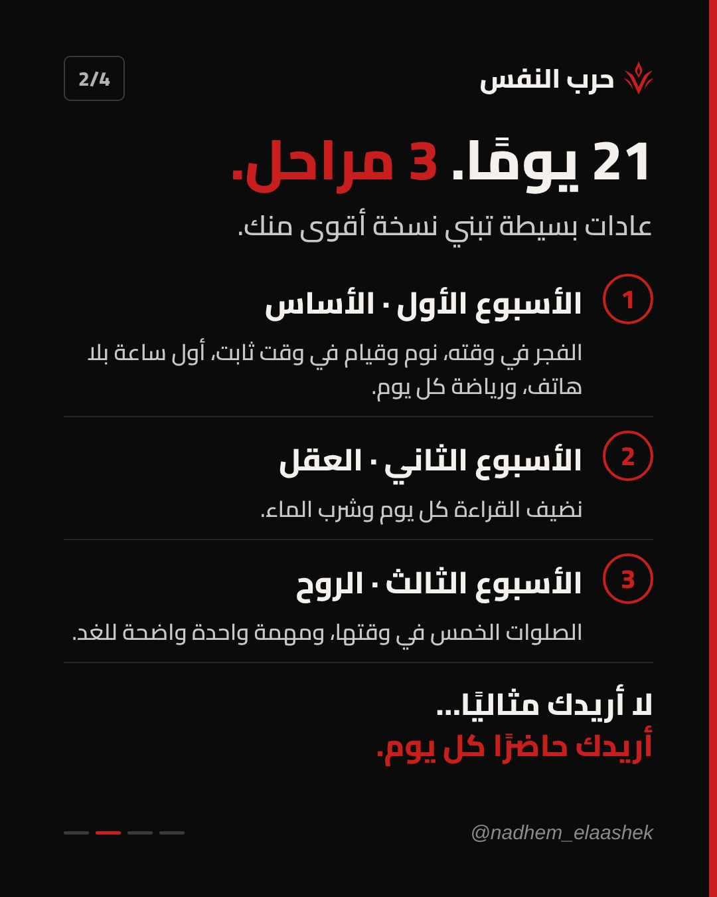
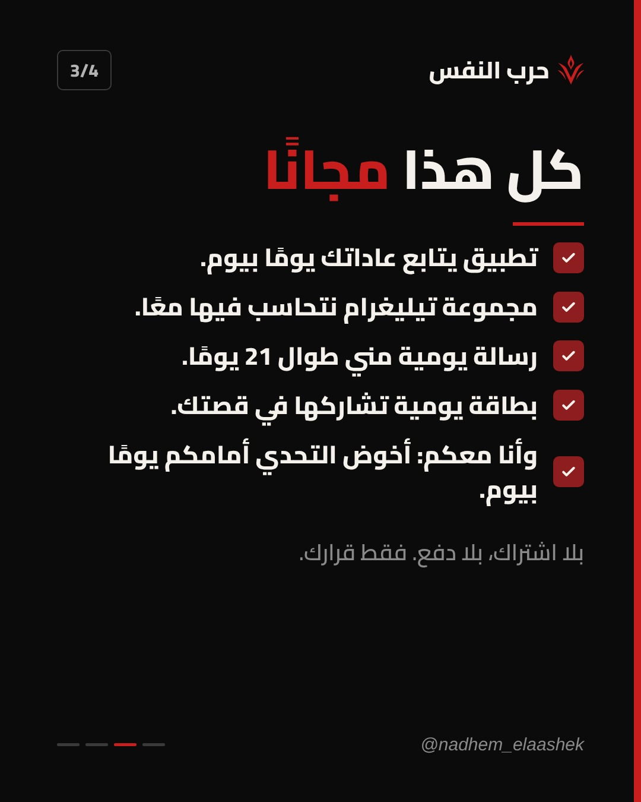
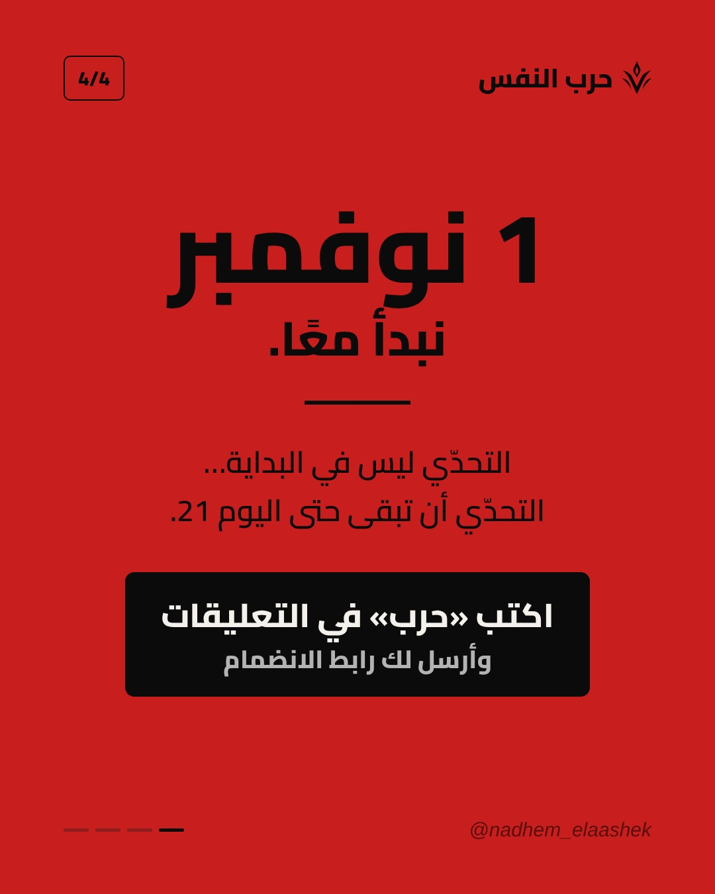

إعلان تحدّي «حرب النفس» · كاروسال 4 صور
اضغط مطوّل على كل صورة باش تسجّلها، ولا هبّط الـ ZIP.
تحميل الكل (ZIP)



الكابشن
أكبر حرب ستخوضها… هي حربك مع نفسك ⚔ ابتداءً من الأحد 1 نوفمبر، نبدأ تحدّي «حرب النفس»: 21 يومًا لنبني الانضباط خطوة بخطوة. الأسبوع الأول: الفجر في وقته، نوم ثابت، أول ساعة بلا هاتف، ورياضة. الأسبوع الثاني: نضيف القراءة والماء. الأسبوع الثالث: الصلوات الخمس في وقتها، ومهمة واضحة للغد. مجانًا بالكامل: تطبيق لمتابعة عاداتك، مجموعة تيليغرام، ورسالة يومية مني. وأنا معكم، أخوض التحدّي أمامكم يومًا بيوم. لا أريدك مثاليًا… أريدك حاضرًا. اكتب «حرب» في التعليقات وأرسل لك رابط الانضمام 👇 وأرسل المنشور لصديق تريده معك في هذه الحرب. اصنع من الألم قوة. #حرب_النفس #VAYNORA #تحدي_21_يوم #الانضباط #تطوير_الذات